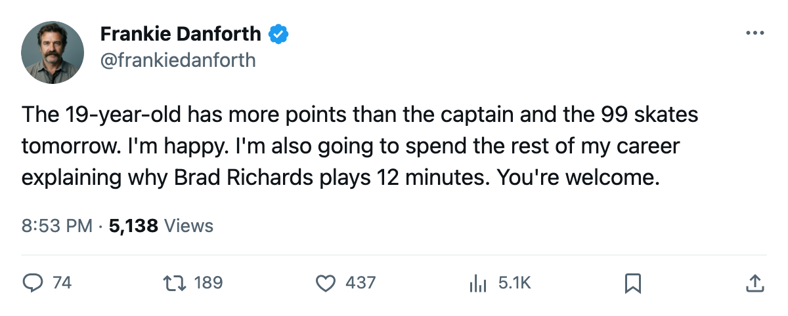
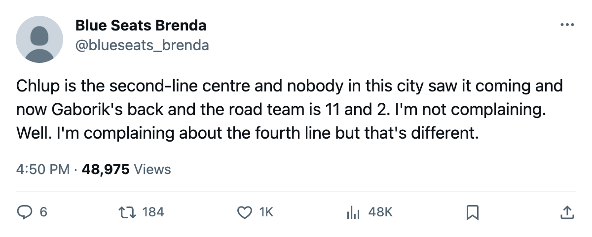

TOR
TORDANFORTH: Code Green, a teenager solved the second-centre problem, and the 99 skates tomorrow
Chlup has 28 points at 20.5 minutes a night, Gaborik returns 2005-12-25, and the only thing left to gripe about is a fourth line I called a tax in October
 Frankie DanforthColumnist · Queen City Telegram
Frankie DanforthColumnist · Queen City Telegram
Code Green

I told you this club needed a second centre. I logged it in 2004-12. I have a file. I will be right until the day I die.
Petr Chlup87 is 19 years old. He has 28 points in 35 games at 20.5 minutes a night, he centres the second line, he skates the first penalty kill, and he makes $2.34M with 1 year left. He is 87 overall with a 95 potential on the Bureau's Book. The second-centre problem is gone. I want that in the record: gone.
The teenager has more points than the captain.  Mats Sundin92 has 26 at 23.4 minutes a night on $8.40M. Chlup has 28 at 20.5. I'm not going to build a column around that fact because it's not a problem. But I noticed.
Mats Sundin92 has 26 at 23.4 minutes a night on $8.40M. Chlup has 28 at 20.5. I'm not going to build a column around that fact because it's not a problem. But I noticed.
What's coming tomorrow is  Marian Gaborik99, who returns from a leg injury on 2005-12-25. 99 overall, $11.90M over 5 years, 8 points in 17 games at 22.6 minutes a night before the leg went between 2005-11-16 and 2005-11-17. The Bureau's Development Index has him at +11, second in the league behind Florida's
Marian Gaborik99, who returns from a leg injury on 2005-12-25. 99 overall, $11.90M over 5 years, 8 points in 17 games at 22.6 minutes a night before the leg went between 2005-11-16 and 2005-11-17. The Bureau's Development Index has him at +11, second in the league behind Florida's  Vaclav Nedorost84 at +12. He sat out 18 games and the form term still ranks him above every other player on this club.
Vaclav Nedorost84 at +12. He sat out 18 games and the form term still ranks him above every other player on this club.
Toronto is 55 points in 35 games. 16-6 at home, 11-2 on the road. 11 points clear of  Boston Bruins. The road trip starts Saturday:
Boston Bruins. The road trip starts Saturday:  Calgary Flames,
Calgary Flames,  Edmonton Oilers,
Edmonton Oilers,  Vancouver Canucks, 3 clubs this season hasn't met. Calgary is 14-13-3 and on a 3-game losing streak with a 5-10 home record. Edmonton is 10-15-4. Vancouver is 11-14-4. This should be fine.
Vancouver Canucks, 3 clubs this season hasn't met. Calgary is 14-13-3 and on a 3-game losing streak with a 5-10 home record. Edmonton is 10-15-4. Vancouver is 11-14-4. This should be fine.
The code is Green. I'll say it plainly: the team leads the division by 11, the 99 is back, the teenager is a top-two centre, and the goaltending has  Roberto Luongo95 at 95 overall. Everything is working.
Roberto Luongo95 at 95 overall. Everything is working.
But I'm not done.
 Brad Richards87 is 25 years old. He is 87 overall. He makes $6.70M with 4 years left. He centres the third line and plays 12.1 minutes a night. He has 22 points in 35 games.
Brad Richards87 is 25 years old. He is 87 overall. He makes $6.70M with 4 years left. He centres the third line and plays 12.1 minutes a night. He has 22 points in 35 games.
That is a power-play right wing at 87 overall who skates 12 minutes on a Tuesday. He is on the top unit as a RW while skating 12.1 even-strength minutes. Against Atlanta on Thursday, the club that's 9-18-3, Brad Richards played 12.1 minutes of hockey. I cannot explain that with a system or a matchup or a defensive assignment, and I would like to hear someone try.
And the fourth line. Vaclav Spacek81 is a 20-year-old with 4 points in 9 games at 6.3 minutes. That's what a fourth-line centre does. I'm not griping at Spacek. I'm griping at the 60 minutes a night that go into running him and the men around him when the third line is 7.4 minutes shorter than the second. Every fourth-line shift is a tax collected whether you win 7-0 or lose 1-3.
Chlup has 28. Gaborik is back tomorrow. The road team has 11 wins. I'll stop.
Code: Green.

